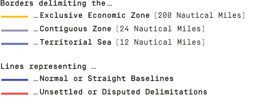

Legend

Context
The most memorable elements of geographical world-maps are usually three key visuals: 1. landmass, 2. water which surrounds the landmass, and 3. man-made boundaries dividing the landmass into different countries.
The inherent charge of all man-made boundaries is to be visualized. This happens either in situ through boundary stones and landmarks or through graphical elements on artefacts such as maps, diagrams or globes. These visualizations are crucial for our geopolitical and socio-economical cohabitation, and shape the world we are living in: Who owns what, which entity is responsible for which area, what is allowed where; all these are questions answered by them.
Especially the concept of lines on maps dividing the landmass into its different sovereign territories is a semiotic concept we learn from an early childhood as the mental image of our world.
The Oceans, however, on most maps and in our mental image are free of borders. Does this depict reality? Is the ocean a common property without borders? The answer is, maybe surprisingly, no.
A large part of the ocean, similar to the landmass, is divided into different territories adherent to their coastal states. Most of these territories are now legally regulated by the Convention on the Law of the Sea, initiated by the UN in 1982 and entered into force in 1994. This relatively new set of rules defines on almost 200 pages all laws which are effective on sea for most UN member states.